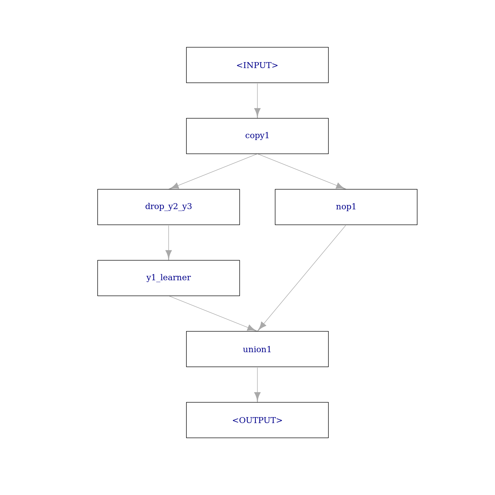

library(mlr3verse)Loading required package: mlr3The website features runtime benchmarks of the paradox package now.
Handle multi-target regression with regression chains.
Lennart Schneider
April 18, 2020
In this tutorial we demonstrate how to use mlr3pipelines to handle multi-target regression by arranging regression models as a chain, i.e., creating a linear sequence of regression models.
In a simple regression chain, regression models are arranged in a linear sequence. Here, the first model will use the input to predict a single output and the second model will use the input and the prediction output of the first model to make its own prediction and so on. For more details, see e.g. Spyromitros-Xioufis et al. (2016).
The following sections describe an approach towards working with tasks that have multiple targets. E.g., in the example below, we have three target variables \(y_{1}\) to \(y_{3}\). This type of Task can be created via the mlr3multioutput package (currently under development) in the future. mlr3multioutput will also offer simple chaining approaches as pre-built pipelines (so called ppls). The current goal of this post is to show how such modeling steps can be written as a relatively small amount of pipeline steps and how such steps can be put together. Writing pipelines with such steps allows for great flexibility in modeling more complicated scenarios such as the ones described below.
We load the mlr3verse package which pulls in the most important packages for this example.
We initialize the random number generator with a fixed seed for reproducibility, and decrease the verbosity of the logger to keep the output clearly represented.
In the following, we rely on some toy data. We simulate 100 responses to three target variables, \(y_{1}\), \(y_{2}\), and \(y_{3}\) following a multivariate normal distribution with a mean and covariance matrix of:
y1 y2 y3
1 2 3 [,1] [,2] [,3]
[1,] 1.00 -0.50 0.25
[2,] -0.50 1.00 -0.25
[3,] 0.25 -0.25 1.00The feature variables \(x_{1}\), and \(x_{2}\) are simulated as follows: \(x_{1}\) is simply given by \(y_{1}\) and an independent normally distributed error term and \(x_{2}\) is given by \(y_{2}\) and an independent normally distributed error term.
The final data is given as:
Classes 'data.table' and 'data.frame': 100 obs. of 5 variables:
$ y1: num 0.681 1.836 0.355 1.783 0.974 ...
$ y2: num 2.33 1.735 3.126 0.691 1.573 ...
$ y3: num 3.19 3.14 2.74 4.31 2.77 ...
$ x1: num 0.788 1.754 0.174 1.844 1.05 ...
$ x2: num 2.336 1.665 2.967 0.651 1.634 ...
- attr(*, ".internal.selfref")=<externalptr> This simulates a situation where we have multiple target variables that are correlated with each other, such that predicting them along with each other can improve the resulting prediction model. As a real-world example for such a situation, consider e.g. hospital data, where time spent in the ICU (not known a priori) heavily influences the cost incurred by a patient’s treatment.
If you feel confident to already have a good feeling of the data, feel free to skip this section. If not, you can use the rgl package to play around with the following four 3D plots with either the feature variables or \(y_{1}\) and \(y_{2}\) on the x- and y-axis and the target variables on the respective z-axes:
In our regression chain, the first model will predict \(y_{1}\). Therefore, we initialize our Task with respect to this target:
As Learners we will use simple linear regression models. Our pipeline building the regression chain then has to do the following:
To combine predictions of a Learner with the previous input, we rely on PipeOpLearnerCV and PipeOpNOP arranged in parallel via gunion() combined via PipeOpFeatureUnion. To drop the respective remaining target variables as features, we rely on PipeOpColRoles. The first step of predicting \(y_{1}\) looks like the following:
step1 = po("copy", outnum = 2, id = "copy1") %>>%
gunion(list(
po("colroles",
id = "drop_y2_y3",
new_role = list(y2 = character(), y3 = character())
) %>>%
po("learner_cv", learner = lrn("regr.lm"), id = "y1_learner"),
po("nop", id = "nop1")
)) %>>%
po("featureunion", id = "union1")
step1$plot(html = FALSE)
Training using the input Task, shows us how the output and the $state look like:
<TaskRegr:multiregression> (100 x 6)
* Target: y1
* Properties: -
* Features (5):
- dbl (5): x1, x2, y1_learner.response, y2, y3$copy1
list()
$drop_y2_y3
$drop_y2_y3$dt_columns
[1] "x1" "x2" "y2" "y3"
$drop_y2_y3$affected_cols
[1] "x1" "x2" "y2" "y3"
$drop_y2_y3$intasklayout
id type
1: x1 numeric
2: x2 numeric
3: y2 numeric
4: y3 numeric
$drop_y2_y3$outtasklayout
id type
1: x1 numeric
2: x2 numeric
$drop_y2_y3$outtaskshell
Empty data.table (0 rows and 3 cols): y1,x1,x2
$y1_learner
$y1_learner$model
Call:
stats::lm(formula = task$formula(), data = task$data())
Coefficients:
(Intercept) x1 x2
-0.03762 0.99851 0.01364
$y1_learner$log
Empty data.table (0 rows and 3 cols): stage,class,msg
$y1_learner$train_time
[1] 0.004
$y1_learner$param_vals
named list()
$y1_learner$task_hash
[1] "933a5b384a9aaebf"
$y1_learner$data_prototype
Empty data.table (0 rows and 3 cols): y1,x1,x2
$y1_learner$task_prototype
Empty data.table (0 rows and 3 cols): y1,x1,x2
$y1_learner$mlr3_version
[1] '0.16.1'
$y1_learner$train_task
<TaskRegr:multiregression> (100 x 3)
* Target: y1
* Properties: -
* Features (2):
- dbl (2): x1, x2
$y1_learner$affected_cols
[1] "x1" "x2"
$y1_learner$intasklayout
id type
1: x1 numeric
2: x2 numeric
$y1_learner$outtasklayout
id type
1: y1_learner.response numeric
$y1_learner$outtaskshell
Empty data.table (0 rows and 2 cols): y1,y1_learner.response
$nop1
list()
$union1
list()Within the second step we then have to define \(y_{2}\) as the new target. This can be done using PipeOpUpdateTarget (note that PipeOpUpdateTarget currently is not exported but will be in a future version). By default, PipeOpUpdateTarget drops the original target from the feature set, here \(y_{1}\).
step2 = po("update_target",
id = "y2_target",
new_target_name = "y2"
) %>>%
po("copy", outnum = 2, id = "copy2") %>>%
gunion(list(
po("colroles",
id = "drop_y3",
new_role = list(y3 = character())
) %>>%
po("learner_cv", learner = lrn("regr.lm"), id = "y2_learner"),
po("nop", id = "nop2")
)) %>>%
po("featureunion", id = "union2")Again, we can train to see how the output and $state look like, but now using the output of step1 as the input:
<TaskRegr:multiregression> (100 x 6)
* Target: y2
* Properties: -
* Features (5):
- dbl (5): x1, x2, y1_learner.response, y2_learner.response, y3$y2_target
list()
$copy2
list()
$drop_y3
$drop_y3$dt_columns
[1] "x1" "x2" "y1_learner.response" "y3"
$drop_y3$affected_cols
[1] "y1_learner.response" "x1" "x2" "y3"
$drop_y3$intasklayout
id type
1: x1 numeric
2: x2 numeric
3: y1_learner.response numeric
4: y3 numeric
$drop_y3$outtasklayout
id type
1: x1 numeric
2: x2 numeric
3: y1_learner.response numeric
$drop_y3$outtaskshell
Empty data.table (0 rows and 4 cols): y2,y1_learner.response,x1,x2
$y2_learner
$y2_learner$model
Call:
stats::lm(formula = task$formula(), data = task$data())
Coefficients:
(Intercept) y1_learner.response x1 x2
0.07135 0.22773 -0.25186 0.97877
$y2_learner$log
Empty data.table (0 rows and 3 cols): stage,class,msg
$y2_learner$train_time
[1] 0.01
$y2_learner$param_vals
named list()
$y2_learner$task_hash
[1] "1bc5196bab655ff5"
$y2_learner$data_prototype
Empty data.table (0 rows and 4 cols): y2,y1_learner.response,x1,x2
$y2_learner$task_prototype
Empty data.table (0 rows and 4 cols): y2,y1_learner.response,x1,x2
$y2_learner$mlr3_version
[1] '0.16.1'
$y2_learner$train_task
<TaskRegr:multiregression> (100 x 4)
* Target: y2
* Properties: -
* Features (3):
- dbl (3): x1, x2, y1_learner.response
$y2_learner$affected_cols
[1] "y1_learner.response" "x1" "x2"
$y2_learner$intasklayout
id type
1: x1 numeric
2: x2 numeric
3: y1_learner.response numeric
$y2_learner$outtasklayout
id type
1: y2_learner.response numeric
$y2_learner$outtaskshell
Empty data.table (0 rows and 2 cols): y2,y2_learner.response
$nop2
list()
$union2
list()In the final third step we define \(y_{3}\) as the new target (again, PipeOpUpdateTarget drops the previous original target from the feature set, here \(y_{2}\)):
Using the output of step2 as input:
NULL$y3_target
list()
$y3_learner
$y3_learner$model
Call:
stats::lm(formula = task$formula(), data = task$data())
Coefficients:
(Intercept) y2_learner.response y1_learner.response x1 x2
2.6445 0.8155 3.8776 -3.5217 -0.7304
$y3_learner$log
Empty data.table (0 rows and 3 cols): stage,class,msg
$y3_learner$train_time
[1] 0.013
$y3_learner$param_vals
named list()
$y3_learner$task_hash
[1] "24dbd64658d33d6d"
$y3_learner$data_prototype
Empty data.table (0 rows and 5 cols): y3,y2_learner.response,y1_learner.response,x1,x2
$y3_learner$task_prototype
Empty data.table (0 rows and 5 cols): y3,y2_learner.response,y1_learner.response,x1,x2
$y3_learner$mlr3_version
[1] '0.16.1'
$y3_learner$train_task
<TaskRegr:multiregression> (100 x 5)
* Target: y3
* Properties: -
* Features (4):
- dbl (4): x1, x2, y1_learner.response, y2_learner.responseThe complete pipeline, more precisely Graph, looks like the following:
By wrapping our Graph in a GraphLearner, we can perform 3-fold cross-validation and get an estimated average of the root-mean-square error (of course, in a real world setting splitting the data in a training and test set should have been done):
For completeness, we also show how a prediction step without having any target variable data available would look like:
<PredictionRegr> for 100 observations:
row_ids truth response
1 NA 3.116960
2 NA 3.327345
3 NA 3.010821
---
98 NA 3.462541
99 NA 3.020585
100 NA 3.664326Note that we have to initialize the Task with \(y_{1}\) as the target but the pipeline will automatically predict \(y_{3}\) in the final step as our final target, which was our ultimate goal here.